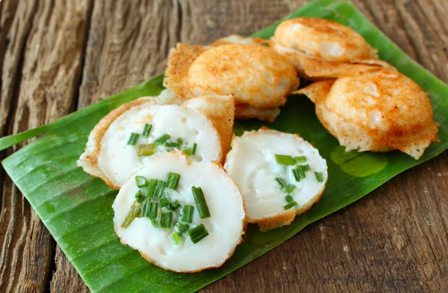

Kanom Krok

Thai coconut "pancakes"
These sweet treats are a common breakfast snack found along the streets of Thailand.
Sometimes topped with corn or green scallions, these delicious litle bites are gooey
on the inside and slightly crunchy on the outside.
Ingredients
The Filling:
- 1 cup coconut milk
- 2 Tbsp granulated sugar
- 1/4 tsp salt
- 2 Tbsp rice flour
The Outer Shell:
- 1/3 cup cooked jasmine rice
- 1/3 cup rice flour
- 1 cup water
- 1/4 cup coconut milk
- 1/4 cup shredded coconut
- 2 Tbsp chopped palm sugar
Toppings (Optional):
- choppped green onions
- sweet corn
- chopped taro
- toasted sesame seeds
Other Ingredients:
- Coconut oil for greasing the pan
Steps
- Blend all ingredients for the outer shell in a blender until smooth and well blended. Set the batter aside.
- For the filling, whisk the rice flour, sugar, and salt together until clumps disappear. Add the coconut milk and whisk until the sugar is dissolved.
- Heat the takoyaki pan to 325 degrees Fahrenheit. The pan is hot enough when a drop of water sizzles and evaporates immediately. Brush the holes with coconut oil.
- Stir both batters first. Pour 1/2 Tbsp of the outer shell batter into the holes. Pour 1 tsp of the filling batter into the middle of each hole by dunking the spoon into the outer shell batter and slightly stirring the spoon without coming into contact with the sides.
- Let the pan cakes cook for one minute. After an additional minute, you may add toppings.
- Continue to cook for about five minutes until the bottom is crispy and golden brown and the top is set.
- Remove the pancakes using a wooden skewer to push them to the side and scooping them with a spoon.
- Place the pancakes on a cooling rack until still warm.
Take me home